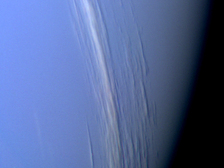
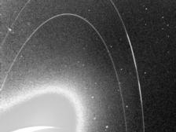
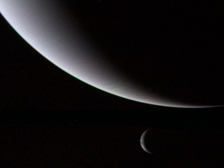

The ice giant Neptune was the first planet located through mathematical predictions rather than through regular observations of the sky. (Galileo had recorded it as a fixed star during observations with his small telescope in 1612 and 1613.) When Uranus didn't travel exactly as astronomers expected it to, a French mathematician, Urbain Joseph Le Verrier, proposed the position and mass of another as yet unknown planet that could cause the observed changes to Uranus' orbit. After being ignored by French astronomers, Le Verrier sent his predictions to Johann Gottfried Galle at the Berlin Observatory, who found Neptune on his first night of searching in 1846. Seventeen days later, its largest moon, Triton, was also discovered.
Nearly 4.5 billion kilometers (2.8 billion miles) from the Sun, Neptune orbits the Sun once every 165 years. It is invisible to the naked eye because of its extreme distance from Earth. Interestingly, the highly eccentric orbit of the dwarf planet Pluto brings Pluto inside Neptune's orbit for a 20-year period out of every 248 Earth years. Pluto can never crash into Neptune, though, because for every three laps Neptune takes around the Sun, Pluto makes two. This repeating pattern prevents close approaches of the two bodies.
The main axis of Neptune's magnetic field is tipped over by about 47 degrees compared with the planet's rotation axis. Like Uranus, whose magnetic axis is tilted about 60 degrees from the axis of rotation, Neptune's magnetosphere undergoes wild variations during each rotation because of this misalignment. The magnetic field of Neptune is about 27 times more powerful than that of Earth.
Neptune's atmosphere extends to great depths, gradually merging into water and other melted ices over a heavier, approximately Earth-size solid core. Neptune's blue color is the result of methane in the atmosphere. Uranus' blue-green color is also the result of atmospheric methane, but Neptune is a more vivid, brighter blue, so there must be an unknown component that causes the more intense color.
Despite its great distance and low energy input from the Sun, Neptune's winds can be three times stronger than Jupiter's and nine times stronger than Earth's. In 1989, Voyager 2 tracked a large, oval-shaped, dark storm in Neptune's southern hemisphere. This "Great Dark Spot" was large enough to contain the entire Earth, spun counterclockwise, and moved westward at almost 1,200 kilometers (750 miles) per hour. Subsequent images taken by the Hubble Space Telescope showed no sign of this Great Dark Spot, but did reveal the appearance and then fading of two other Great Dark Spots over the last decade. Voyager 2 also imaged clouds casting shadows on a lower cloud deck, enabling scientists to visually measure the altitude differences between the upper and lower cloud decks.
Neptune has six known rings. Voyager 2's observations confirmed that these unusual rings are not uniform but have four thick regions (clumps of dust) called arcs. The rings are thought to be relatively young and short-lived.
Neptune has 13 known moons, six of which were discovered by Voyager 2. A 14th tiny, very dim, moon was discovered in 2013 and awaits official recognition. Triton, Neptune's largest moon, orbits the planet in the opposite direction compared with the rest of the moons, suggesting that it may have been captured by Neptune in the distant past. Triton is extremely cold - temperatures on its surface are about -235 degrees Celsius (-391 degrees Fahrenheit). Despite this deep freeze at Triton, Voyager 2 discovered geysers spewing icy material upward more than 8 kilometers (5 miles). Triton's thin atmosphere, also discovered by Voyager, has been detected from Earth several times since, and is growing warmer - although scientists do not yet know why.
How Neptune Got its Name
Neptune was predicted by John Couch Adams and Urbain Le Verrier. The men independently accounted for the irregularities in the motion of Uranus by correctly predicting the orbital elements of a trans-Uranian planet. Using the predicted parameters of Le Verrier (Adams never published his predictions), Johann Galle discovered the planet in 1846. Galle wanted to name the planet for Le Verrier, but that was not acceptable to the international astronomical community. Instead, this planet is named for the Roman god of the sea.